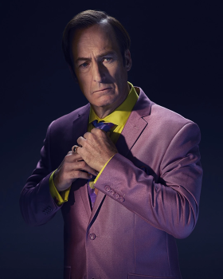

Ana Karakterler

Walter White
Kanser teşhisi konulan ve ailesinin geleceğini güvence altına almak için uyuşturucu işine giren kimya öğretmeni.

Jesse Pinkman
Walter'ın eski öğrencisi ve sonradan iş ortağı olan genç ve sorunlu karakter.

Saul Goodman
Walter ve Jesse'nin kanunsuz işlerini yasal göstermeye çalışan zeki ve kurnaz avukat.